[计算机自顶向下方法]:路由选择协议
1.路由选择算法
路由选择算法可以根据算法是集中式还是分散式来划分
集中式路由选择算法
使用该算法时，需要已知所有节点的之间的连通性以及所有链路的开销，比如链路状态(Link State,LS)算法
分散式路由选择算法
没有链路拥有所有链路开销的完整信息，路由器以迭代，分布式的方法计算出最低开销路径，比如距离向量(Distance Vector,DV算法
1.链路状态路由选择算法(LS算法)
以Dijkstra算法为链路状态算法的代表
Dijkstra算法
Dijkstra是一个典型的的贪心算法，通过保留目前为止所找到的每个顶点的最短路径来工作, 属于数据结构中的经典算法
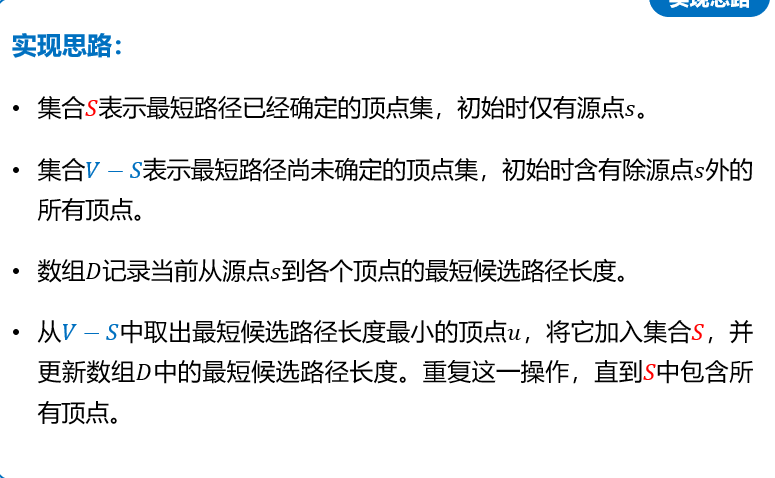
伪代码如下:
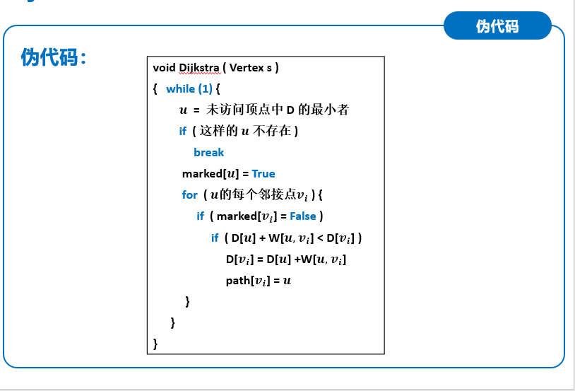
振荡问题
由于各路由器可能同时进行LS算法，导致最短路径的计算结果不断振荡
例:
节点D产生一个发往A的大小为1的流量，节点B也产生发往节点A的一个大小为1的流量,节点C产生一个大小为e的流量，流量的终点也是A,此时根据LS算法，各流量的方向如图
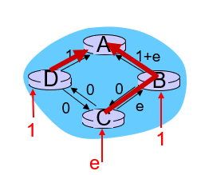
LS算法再次运行，此时由于各路径上
的负载(开销)产生了变化，计算出不同的路径
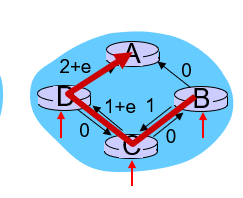
再一次进行LS算法
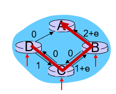
再一次
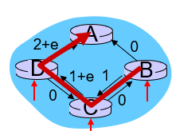
这就是LS算法会产生的振荡过程，目前较好的解决方法是确保并非所有的路由器都同时进行LS算法
2.距离向量路由选择算法(DV算法)
以Bellman-Ford算法为代表
Bellman-Ford算法
Bellman-Ford方程
记$d_x(y)$是从节点x到节点y的最低开销路径的开销,$c(x,v)$代表x, v之间的开销，$v \in {x的所有邻居}$
==$d_x(y) = min_v {c(x,v)+d_v(y)}$==
基本思想
记$N$为所有顶点的集合
每个节点从$D_x(y)$开始，对在$N$中的所有节点y, 估计从x到y的最低开销路径的开销
注:DV算法采用的是拟合的思想，所以说是估计
具体过程
设计一个结点x的距离向量，为：
。该向量是从x到N中所有其他结点y的费用估计的向量。使用DV算法，对每个结点维护以下路由选择信息：
- 对每个邻居结点
v，从x到相邻邻居v的费用为c(x, v) - 结点x的距离向量
Dx，包含了x到N中所有目的地y的费用估计值 - 每个邻居的距离向量
Dv
接下来每个结点不时地向它的每个邻居发送它自身的距离向量副本
- 对每个邻居结点
当结点
x从其它每一个邻居v接收到一个新距离向量的时候，它将保存v的距离向量，然后使用方程来更新自身的距离向量
 。该向量是从x到N中所有其他结点y的费用估计的向量。使用DV算法，对每个结点维护以下路由选择信息：
。该向量是从x到N中所有其他结点y的费用估计的向量。使用DV算法，对每个结点维护以下路由选择信息：- 如果自身的距离向量确实得到更新，更新完毕后，接下来将对每个邻居发送它的距离向量副本
- 最后当整个网络无更新报文发送，进入到静止状态时，收敛到最小路径
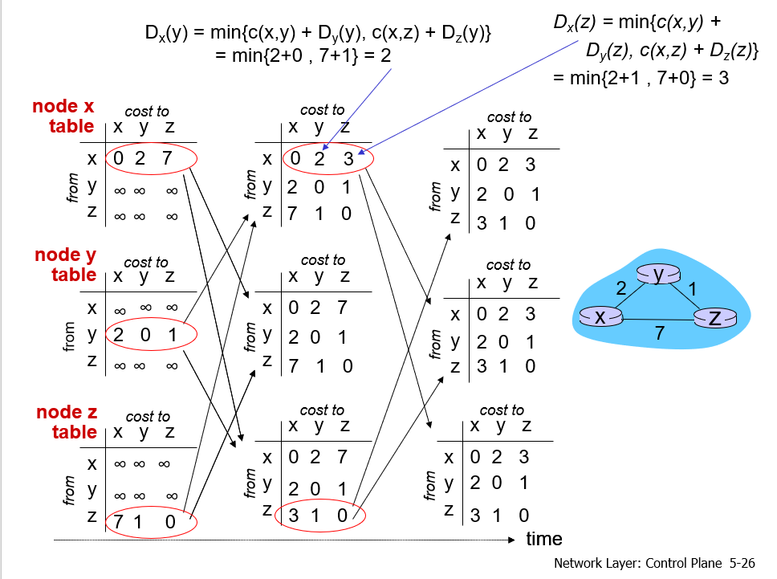
无穷计数问题
例如，存在这样一个网络：
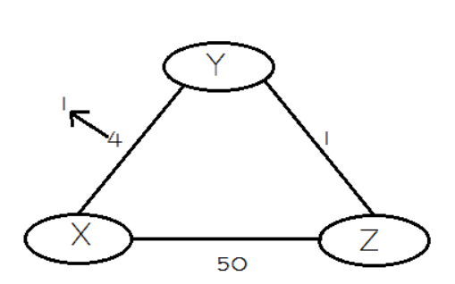
- 某一时刻，Y检测到它到X的链路费用由4减少为1，于是它更新了自己的距离向量，并通知了Z
- Z在收到Y的更新报文后，也更新了自己的距离向量（由5减为2），并向邻居们发送更新报文
- 而后，Y又收到了Z的更新报文，但它发现并没有改变自己的最低费用，于是保持不变
- 这样，仅仅经过了两次迭代网络就达到了静止。好消息通过网络得到了迅速传播
但是，当链路费用增加（甚至断开）时，就不会这么简单了
我们看下面这个例子：
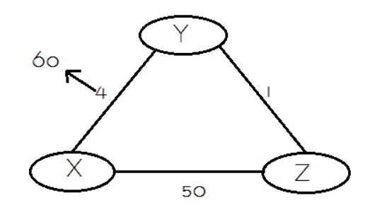
- Y检测到它到X的路径费用由4增加到了60, 此时节点Z的距离向量为：d(X) = 5, d(Y) = 1, d(Z) = 0
- 由于Y保存了Z的距离向量副本，Y的距离向量更新为：d(x) = 5 + 1 = 6, d(Y) = 0, d(z) = 1，这个逻辑显然是错误的，因为Z到X的距离为5的前提是要经过Y，但Y更新后的路径又要经过Z，这就形成了一个选路环路（routing-loop）问题
- 因为Y的距离向量更新了（虽然是错误的），但它还是向Z发送了更新报文
- Z收到更新报文后，比较了下邻居们到X的距离，发现经过Y的路径距离为1 + 6 = 7，小于直接到X的距离，于是Z也更新的自己的距离向量为: d(x) = 7, d(y) = 1, d(z) = 0, 到
x的距离的值相对于之前只上升了1, 然后又将更新后的距离向量发给Y - Y收到后又更新向量为8，然后再发给Z。。。
- 这样循环往复，更新报文在Y和Z之间传来传去，直到第44次迭代后，Z算出它经由Y的路径费用大于50为止。此时，Z最终确定到X的最短路径费用是直接到达X的费用50，而Y也得到了最短路径是经Z到X的费用51。
可以看出，虽然最后还是得到了正确的信息（最后的50和51是正确的！），但坏消息的传播与好消息相比实在是慢太多了！而且，如果X和Y之间的费用为10000，Z和X的费用是9999时，就会出现无穷计数（count-to-infinity）问题
3.LS与DV算法的比较
- DV 算法中，每个节点只需要维护自身的距离向量，且只需要与自己相连的链路的状态；而 LS 算法中每个节点都需要知道所有链路的状态；
- DV 算法中每个节点只需要把自己的信息传给相邻节点；而 LS 算法中每个节点都需要在网络中广播自己的信息，以实现网络中每个节点都保存有整个网络完整的拓扑信息；
- DV 算法可以是异步的，也即不要求节点之前同步，当邻居节点信息有变时完全可以再执行以此迭代，即可更新信息；而 LS 则要求全局信息已知，也就要求所有节点的信息都是正确的；
2. AS
什么是AS
- AS，**(Autonomous System,自治系统),是指统一使用内部路由协议(OSPF, RIP)的一组网络**
- 一个自治系统由全球唯一的AS号(ASN)进行标识,由ICANN区域注册所分配
3. AS内部路由选择
AS内部的路由选择协议这里介绍两种
1. RIP
RIP 协议是分布式的基于 DV 算法的路由选择协议，下面我们分析一下 RIP 协议在 DV 算法的基础上提出怎样的封装
距离
RIP 协议中的距离得到了定义，从一路由器到直接连接的网络的距离定义为 1，到非直接连接的网络距离定义为所经过的路由器数量加 1。由于这个定义，RIP 协议的“距离”也称之为“跳数”。
最大度量
对于无穷计数问题，RIP 协议提供了解法——定义最大度量
RIP 协议允许一条路径最多只能包含 15 个服务器，若距离等于或大于 16 时将直接不可达。出现无穷计数时，路由器之间相互传播错误的信息会使最短距离增长到 16，这就到达了最大度量，就可以规避故障链路了。
但是这也引发了新的问题，要是 2 个路由器之间的距离本身就超过 16 呢？这没有办法，也会被认为是不可达的，因此 RIP 协议无法适用于较大的互联网
周期性广播
路由器之间将按照固定的时间间隔交换路由信息，同时当网络拓扑发生变化时也会及时通告拓扑变化之后的路由信息
报文头
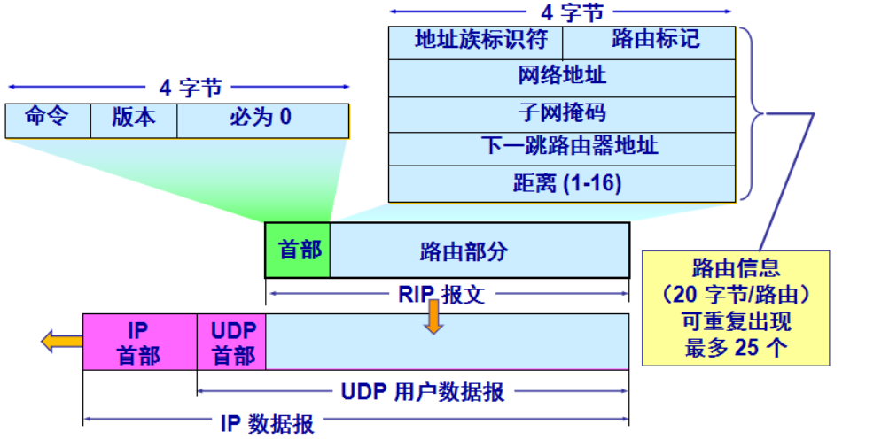
2. OSPF
开放最短路径优先(OSPF) 协议被广泛用于因特网 AS 内部路由选择，开放指的是路由选择协议规范是公众可用的，而并非属于某一厂家OSPF 协议是一种链路状态协议，它使用洪泛链路状态信息和 Dijkstra 算法实现，下面看一些 OSPF 协议的具体实现方式：
链路状态数据库
运载 OSPF 协议的所有路由器最终会建立一个链路状态数据库，这个数据库包含 3 张表来协同工作：
- 邻居表：邻居表之间通过问候报文联系，确认相邻拓扑是否正常；
- 链路状态表：通过交换邻居表，形成完整的网络拓扑图，该表在 AS 内的所有路由器是一致的；
- 计算路由表：运载 Dijkstra 算法，获得最佳路径。
接下来我们来看一下路由器和邻居之间，是怎么通过这 3 张表进行工作的。
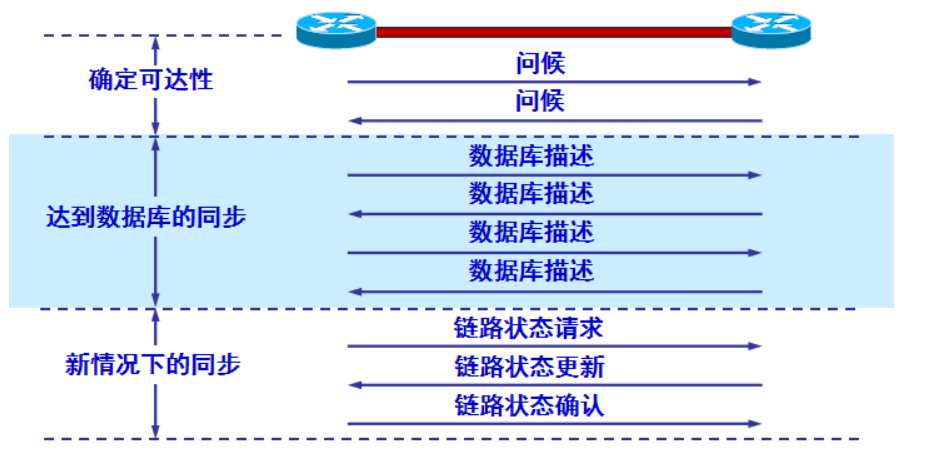
泛洪法
由于需要让所有的路由器得到自己的路由信息，因此需要向 AS 内的所有相邻路由器发送信息。实现这个功能的是洪泛法，路由器通过所有输出端口向相邻路由器发送信息，而每一个相邻路由器再把信息发送给相邻的路由器，最终 AS 内的所有路由器都会得到这个路由信息。
同时 OSPF 协议的洪泛法是可靠的，因为对于任何路由器，收到其他路由器发来的分组之后需要发送 ACK，这就可以保证路由信息的传递正确。
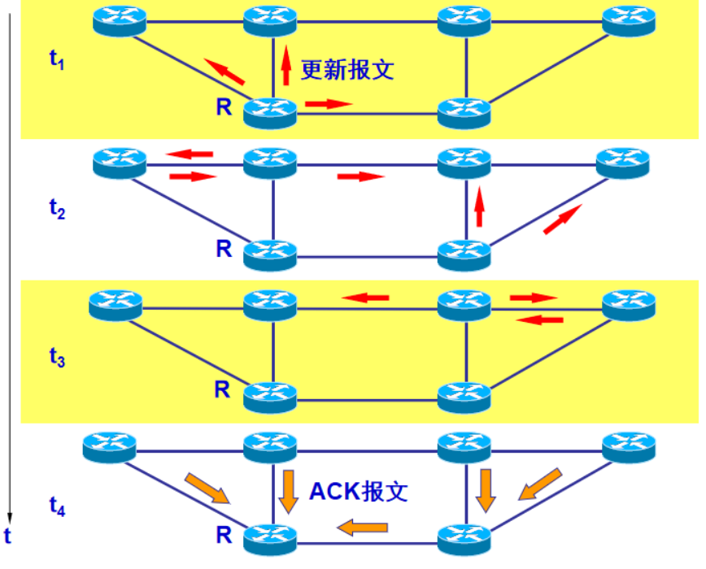
触发式更新
路由表的更新并非是周期性的，而是当链路状态发生变化时，路由器才向所有的路由器使用洪泛法发送信息。由于这种方式，使得链路状态表更新很快，使得最低开销路径的收敛速度加快，同时也可以保证 AS 内的所有路由器的链路状态表一致
报文段
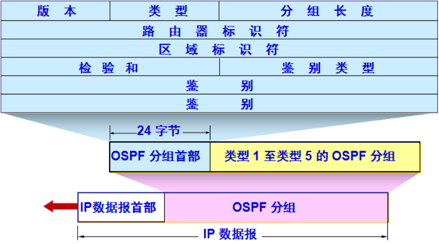
- Hello：发现、维持邻居路由器的可达性；
- 数据库描述：向邻居给出自己的链路状态数据库中，所有链路状态项目的摘要信息；
- 链路状态请求：向邻居请求发送某些链路状态的详细信息；
- 链路状态更新：使用洪泛法对全网更新链路状态；
- ACK：对更新分组的确认。
运输层协议
OSPF 报文由 IP 协议承载，而不是使用 UDP 协议，此时的 IP 数据报的协议字段为 89。OSPF 报文的篇幅很小，这就可以加快数据报的传输速度
4. AS间路由选择
BGP 的作用
BGP的主要目标是为处于不同AS中的路由器之间进行路由信息通信提供保障
对于一个 AS 和 AS 内的某一个路由器，在路由器中有一个转发表，用于选择和确定分组在路由器的输出链路。对于分组需要发送到 AS 之外时，BGP 提供的并不是特定的目的地址，而是提供了一个通过 CIDR 得到的网络前缀，这个网络前缀能够标志一个子网或一个子网的集合
概括起来，BGP 的作用是：容许子网向路由器其余部分通告它的存在
BGP 的任务
BGP 对于每一台路由器来说，需要完成 2 个任务：
- 从临近的 AS 获得前缀可达性信息：BGP 允许每个子网向因特网的其他部分告知自己的存在，同时 BGP 确保在因特网中所有的 AS 都知道该子网；
- 确定到达子网的最佳路由：路由器将在本地允许 BGP 路由选择过程，此时 BGP 协议需要基于网络前缀的可达性信息，向路由器提供最佳路由
BGP 路由信息
AS间通信
首先考虑简单的情况，将整个 AS 看做一个整体，假设现在需要向所有路由器通告 3d 的可达性信息。首先 AS3 向 AS2 发送 BGP 报文，告知 3d 为与 AS3 中，接着 AS2 向 AS1 发送 BGP 报文告知 AS1 可以通过 AS2 访问 3d。通过这种我们熟悉的交互方式，就可以使所有 AS 知晓 3d 的存在并得到路径
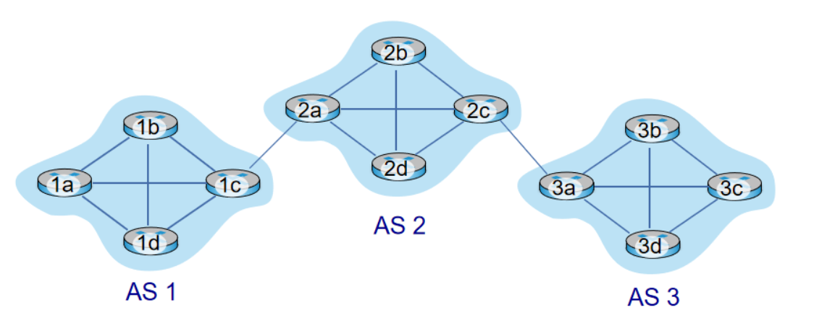
实现
IBGP与EBGP
内部路由器与网关路由器
对于每个 AS，每台路由器只有 2 种情况，即内部路由器或网关路由器，其中内部路由器仅链接在 AS 中的主机和路由器, 网关路由器位于 AS 边缘，通过链路连接其他的 AS 的网关路由器
在 BGP 中，每对路由器都是使用 179 端口的 TCP 连接交换路由信息，每条连接及其通过连接的报文被称之为 BGP 连接。由于 BGP 连接可能是 AS 内的，也可能存在于 AS 间，因此我们把跨越 2 个 AS 的 BGP 连接称之为**外部 BGP(eBGP)，相同 AS 中的两台路由器间的 BGP 连接称之为内部 BGP(iBGP)**连接
如图就给出了网关路由器、eBGP 和 iBGP 的示意，注意 iBGP 连接并不一定要与物理链路对应。
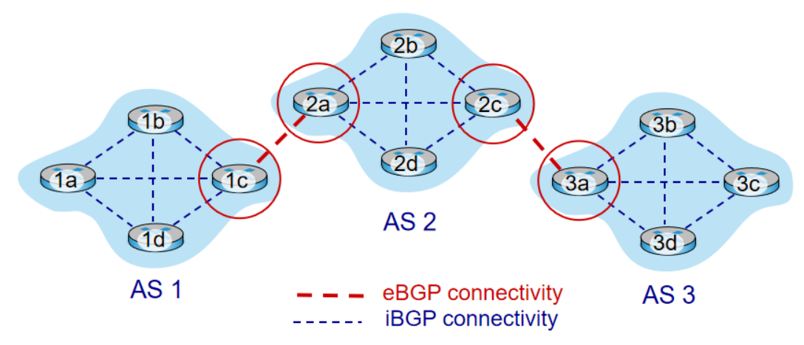
BGP 属性
BGP 连接通告前缀时，前缀及其属性被称之为路由，前缀中包含一些称之为“属性”的信息。我们着重关注 2 个重要的属性：
- AS-PATH：包含前缀通告所经过的 AS 序列，例如在上文中的 “AS2 AS3”。同时这个属性还可以用于检测和防止通告环路，尤其是路由器在该属性中发现包含了自己所在的 AS，这种通告会被直接拒绝；
- NEXT-HOP：即下一跳，这个属性表示的是 AS-PATH 起始路由器接口的 IP 地址。
有了这 2 个属性，对于一条 BGP 路由就包含了 3 个重要的组件：AS-PATH、NEXT-HOP 和目的前缀
热土豆路由选择
BGP 路由选择的原理是热土豆路由选择，即从所有路由中选择到开始该路由的 NEXT-HOP 路由器具有的最小开销作为学习的信息。通过热土豆路由选择添加 AS 外前缀的步骤如图所示，当 路由表学习可达性信息时，BGP 协议和 AS 内路由选择协议(OSPF 协议)需要协同工作。
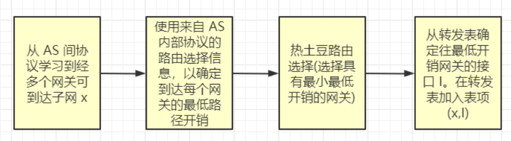
热土豆路由选择的思想是：将分组发给最近的网关路由器，用尽可能最低开销将分组送出其所在 AS
之所以称之为热土豆，就是当分组被类比为“热土豆”时，由于烫手，所以我们要尽可能快地把“热土豆”扔给下一个人。因此热土豆路由选择是一种自私的算法，它只考虑到减小自己 AS 内传输分组的开销，但是忽略了 AS 外端到端的其他开销
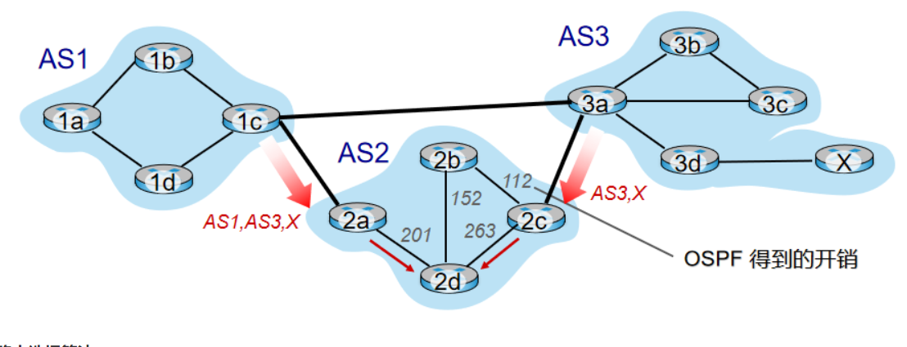
路由选择算法
BGP 路由选择的原理是热土豆路由选择，下面就看一下 BGP 实际使用的路由选择算法。首先如果只有一条路由，则 BGP 只能选择这条路由进行传输。当存在多条路由时，按照下面的消除规则，直到剩下一条路由：
- 比较本地偏好：路由会拥有一个本地偏好属性，该属性的值是一种策略性决定，它取决于 AS 的网络管理员。本地偏好信息可能从该路由器设置，或者相同 AS 中的其他路由器学习到，拥有较高本地偏好的路由会被选择；
- 选择最短 AS-PATH：值得一提的是若 BGP 只使用这个规则来选择路由的话， BGP 会使用 DV 算法来决定路径，此时度量路径的是 AS 的跳数；
- 使用热土豆路由选择：选择具有最靠近 NEXT-HOP 路由器的路由；
- 如果仍然剩下多条路由，参考 BGP 标识符选择。
通过这种算法，BGP 的路由选择可以考虑到尽可能低的开销，而不是自私的路由选择
本博客所有文章除特别声明外，均采用 CC BY-SA 4.0 协议 ，转载请注明出处！